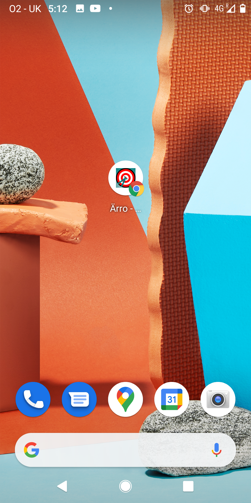

Workshop Donumenta
Ärro - Konzept
Stefan Langenmaier
Zu mir
Stefan LangenmaierDiplom Informatik in Ulm studiert
- Web-Entwickler
- Software-Berater
- Berater für Suchmaschinen
- Operations-Engineer
Agenda
- Prototyp
- Technik
- Schnittpunkte
- Ziel
Zum Prototypen
Ärro
Privates Projekt ursprünglich zum Treffen von anderen Leuten.Demo
StartWeb-App

- Reine Web-App
- Expierence wie gewöhnliche Apps
Lade Screen
- Logo der App sichtbar
- Farbschema/Hintergrund
Rechtliches
- Müsste nochmal abgestimmt und neu geschrieben werden
Berechtigungen
- Sehr verschieden auf unterschiedlichen Geräten
- Mehrere Schritte nötig
Navigation
- Richtung
- Abstand
- Ziel (Status/Beschreibung/Name)
- Status (Filter/Suche)
Gefunden

- Farbwechsel
- Bewertung
- Anzeige des hinterlegten Mediums
Persönlich
- Statistiken über sich selbst
- Anzahl ersteller Punkte
- Anzahl gefundener Punkte
- Anzahl Aufzeichungspunkte
Rangliste
- nicht implementiert
- Vergleich mit anderen
Gefundene Punkte
- nicht implementiert
Erstellte Punkte
- Liste mit selbst erstellten Punkten
Punkte erstellen
- Datei hochladen
- an der aktuellen Position mit seinem Status hinterlegen
Teilen

- Link erstellen den man an Freunde senden kann (Messenger wie Whatsapp, Telegram aber auch ein per Mail)
- Link kann auch als QR-Code auf Flyer verwendet werden
Account anlegen
- nicht implementiert
Daten löschen
- Entfernt den Nutzer von der virtuellen Karte und setzt seine gefundenen Daten zurück.
Community
- Ziel kann auch eine andere Person sein.
Zusammenfassung
- Abenteuer/Entdeckung/Überaschung im Vordergrund
- Möglich mit anderen Menschen in Kontakt zu kommen
- Experimentelles Interface
Technisch
- Webanwendung
- geteste mit Chrome, Firefox und teilweise mit Safari
- Kompass nur bedingt möglich
- AR auf immer mehr Geräten/Modellen möglich
Code Organisation
- Backend
- Frontend
Backend
- API (Java/Quarkus)
- Datenbank (Elasticsearch)
- Dateien
Frontend
- SPA (Javascript/Svelte)
- CSS-Grid (Kein CSS-Framework)
- model-viewer
Lizenz
AGPLAnpassungen
- Allgemeins Styling (Farbschema, Logo)
- Integration einer Hilfe (Intro-Video)
- Verbesserung der UX
- 3D-Modelle aufbereiten
- Rechtliches abklären
Entscheidungen
- Sprache/Text
- Welche Funtktionalität wird benötigt?
- In welcher Reihenfolge machen wir das?
- Was wollen wir in einer zukünftigen Version haben?
Arbeitsweise
- Wo?
- Wer sortiert die Prioritäten?
- Wann können wir regelmässige Abstimmungen zu Details machen?
Ziel
- einfach
- unterhaltsam
- überraschend